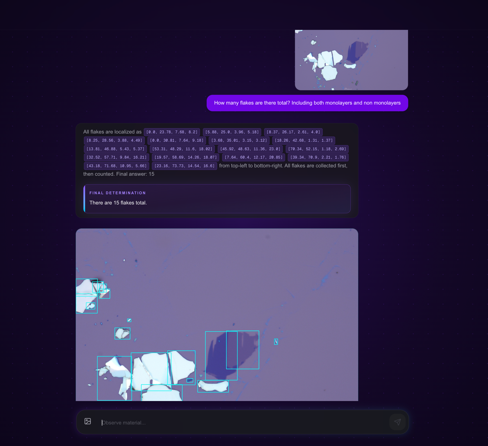
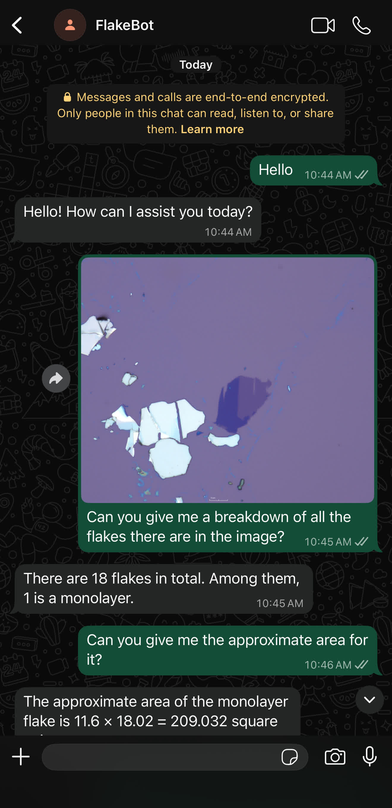
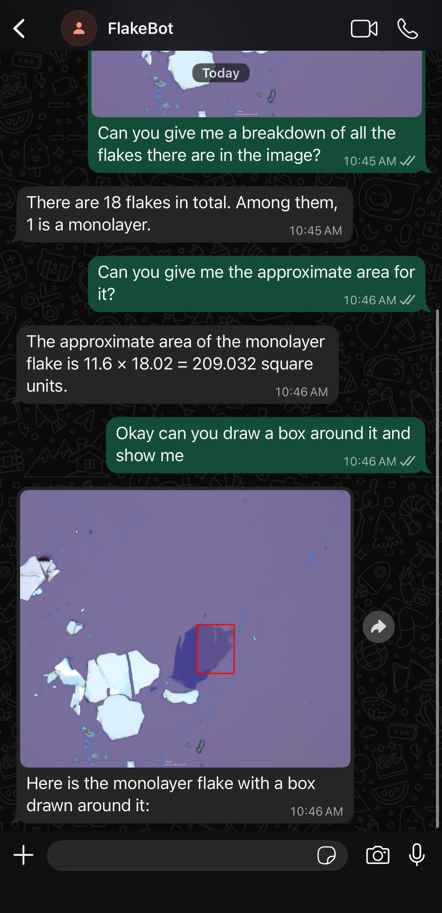
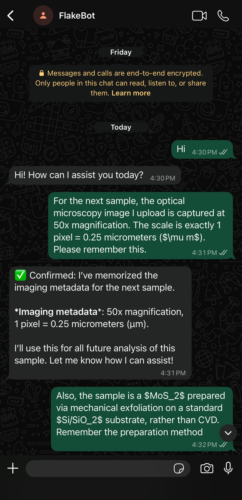
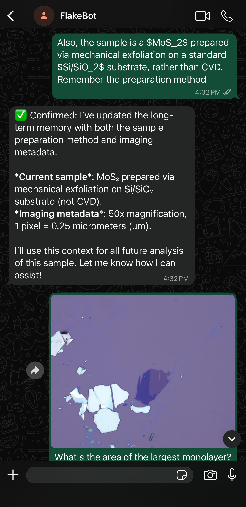
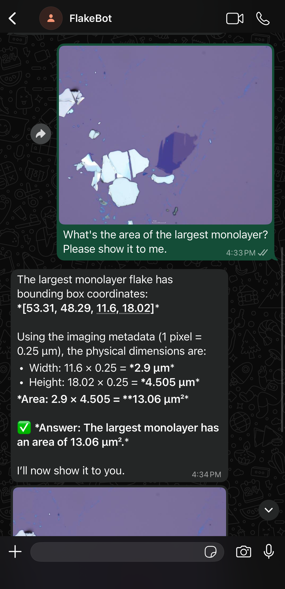
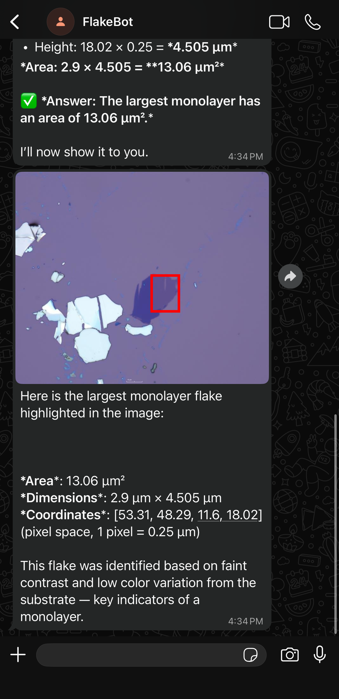

The transition from optical identification of 2D quantum materials to practical device fabrication requires dynamic reasoning past accurate detection. While recent domain-specific Multimodal Large Language Models (MLLMs) successfully ground visual features using physics-informed reasoning, their outputs are optimized for step-by-step cognitive transparency. This yields verbose candidate enumerations followed by dense reasoning that, while accurate, may induce cognitive overload and lack immediate utility for real-world interaction with researchers.
To address this challenge, we introduce OpenQlaw, an agentic orchestration system for analyzing 2D materials. The architecture is built upon NanoBot, a lightweight agentic framework inspired by OpenClaw, and QuPAINT, one of the first Physics-Aware Instruction Multi-modal platforms for Quantum Material Discovery. This allows accessibility to the lab floor via a variety of messaging channels. OpenQlaw allows the core Large Language Model (LLM) agent to orchestrate a domain-expert MLLM, with QuPAINT, as a specialized node, successfully decoupling visual identification from reasoning and deterministic image rendering.
By parsing spatial data from the expert, the agent can dynamically process user queries, such as performing scale-aware physical computation or generating isolated visual annotations, and answer in a naturalistic manner. Crucially, the system features a persistent memory that enables the agent to save physical scale ratios (e.g., 1 pixel = 0.25 µm) for area computations and store sample preparation methods for efficacy comparison. The application of an agentic architecture and the extension to use the core agent as an orchestrator for domain-specific experts transforms isolated inferences into a context-aware assistant capable of accelerating high-throughput device fabrication.
The application of an agentic architecture and the extension to use the core agent as an orchestrator for domain-specific experts transforms isolated inferences into a context-aware assistant capable of accelerating high-throughput device fabrication.
A central vision-language agent manages the conversation, routes specialized image understanding requests to the appropriate domain expert, and returns concise responses instead of exposing the full raw reasoning trace.
QuPAINT, a specialized material-domain model, produces flake-localization outputs and physics-aware reasoning that OpenQlaw can parse into actionable coordinate arrays.
Structured coordinates are combined with remembered scale and sample context to compute physical area and produce targeted annotations when requested.

QuPAINT identifies flakes, but the direct output is verbose and filled with raw coordinate arrays and broad visual overlays that require extra manual interpretation.


OpenQlaw returns a concise breakdown first, computes approximate area from cached coordinates, and then draws a box only after the user asks to see the monolayer.
OpenQlaw stores imaging metadata and sample preparation notes as persistent context. Once the user gives a physical scale, the system can reuse it in later turns to convert pixel-space detections into real micrometer-based measurements and grounded follow-up responses.




This work is partly supported by MonArk NSF Quantum Foundry (DMR-1906383) and NSF Quantum Award (2444042). It acknowledges the Arkansas High-Performance Computing Center for providing GPUs.